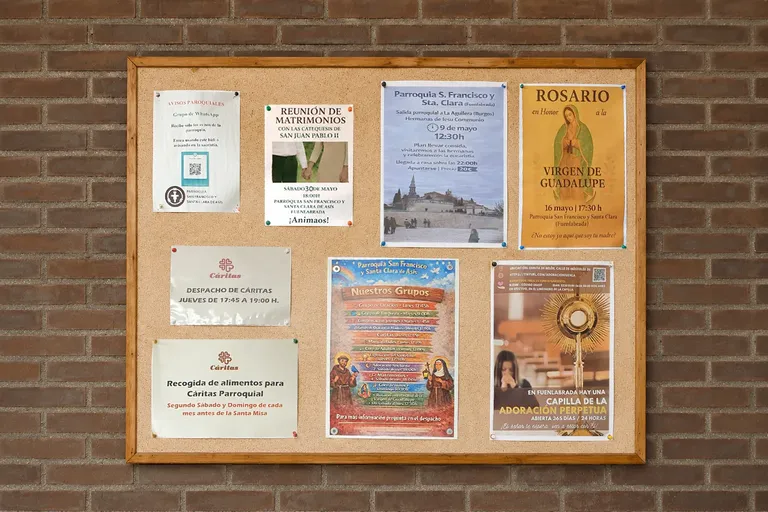

Comunidad católica en Fuenlabrada. Horarios, sacramentos, actividades y vida parroquial
Bienvenido a la Parroquia de San Francisco y Santa Clara de Asís. Aquí encontrarás los horarios de culto, información sobre los sacramentos, actividades pastorales y formas de participar en la vida de nuestra comunidad.
19:30
12:30
-30'
10:00 a 12:00
Jueves de 10:00 a 19:30
2º Sábado de mes De 18:30 a 23:30
Despacho parroquial Miércoles de 17:00 a 18:00
Jueves de 12:00 a 13:00
Preparamos y celebramos los sacramentos de iniciación cristiana y el Matrimonio, acompañando a niños, jóvenes, adultos y novios en su camino de fe.
Consulta los requisitos, la preparación y las fechas de celebración, así como la información sobre otros sacramentos.


Mobirise.com